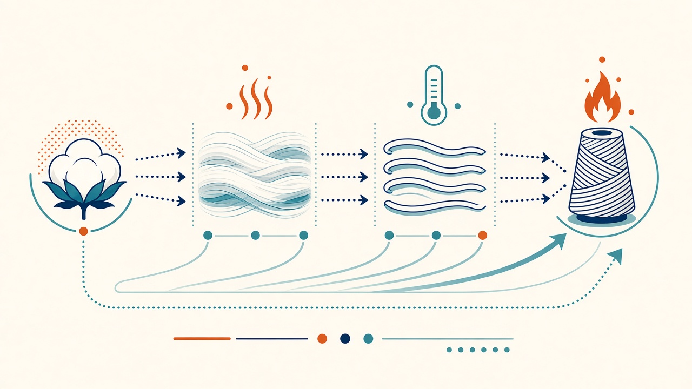
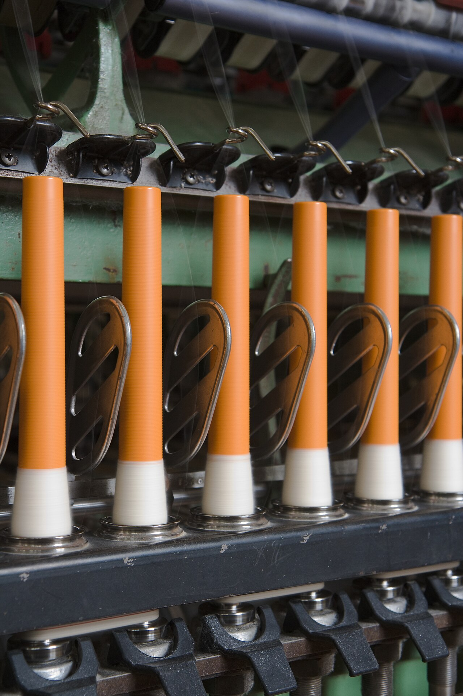
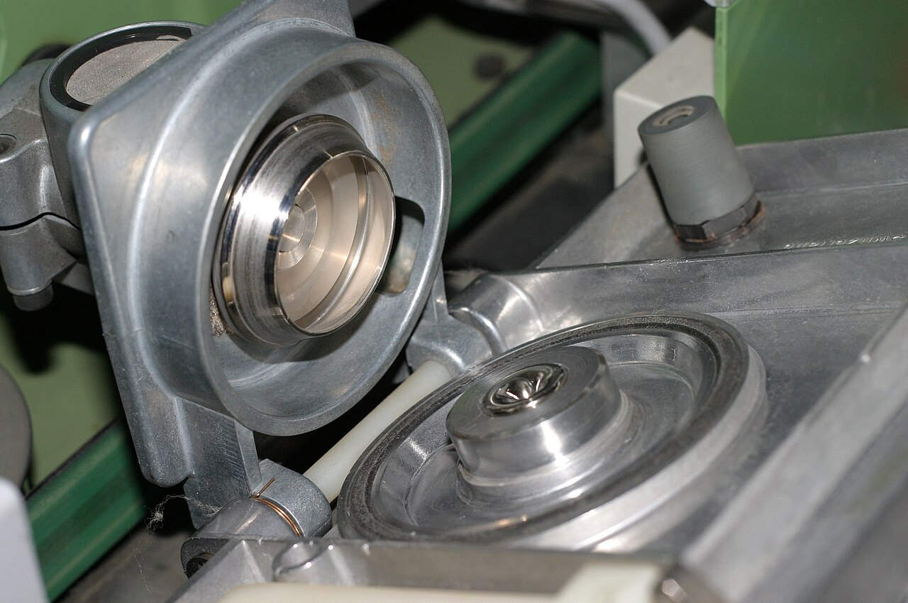
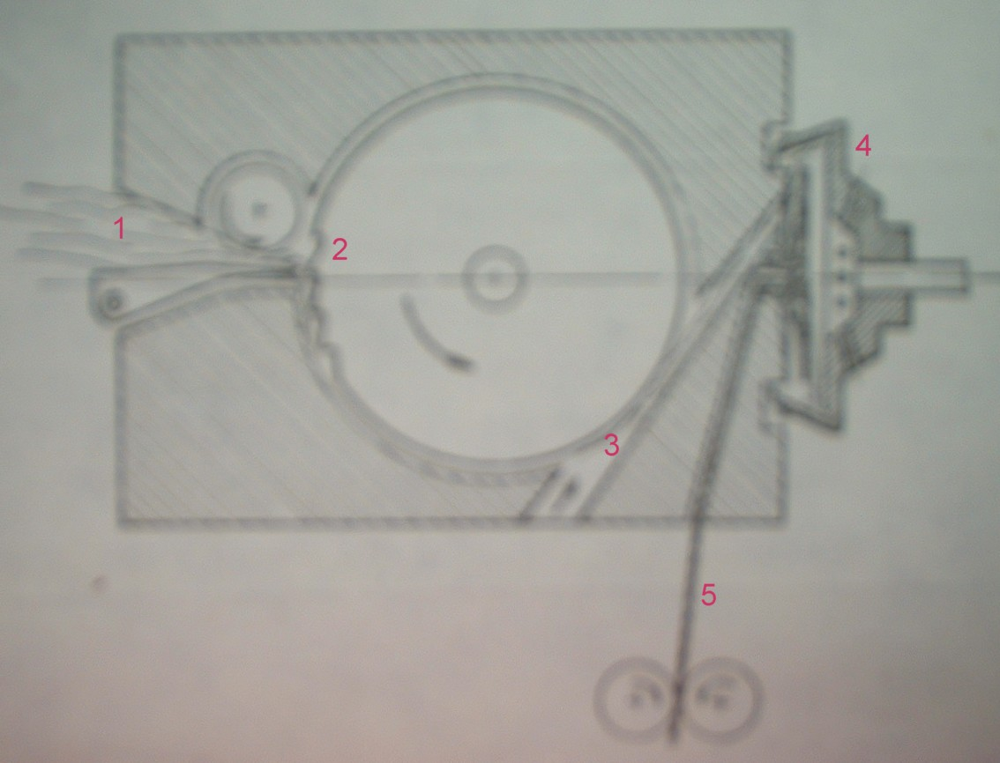

교육자료 · 방적
방적
쉬운 말: 짧은 섬유를 풀어 나란히 하고, 늘리고, 꼬아 실로 만든다. 티셔츠 사는 주로 면 방식(숏 스테이플) 라인. 재료는 섬유, 굵기 숫자는 번수.


왜 이 칸 왜
쉬운 말: 실을 꼬아 뽑는 길. 티 바디 본선. 코마 Ne 26–30은 공개·작지 예.
이름: Ring / Compact. 조방→콥→권사
쉬운 말: 조방 없이 빠르게 굵은 실. 싼·두꺼운 티·플리스.
이름: Open-end / rotor. 치즈에 감김
쉬운 말: 바람으로 실을 묶음. 잔털·필링 적음. 레이온·멜란지·CVC.
이름: Vortex / MVS. 옷 에어젯(MJS) 자리
블로우룸 → 카딩 → 연조. 코밍 없음. 넵이 남는다. 베이직 티, 플리스, OE.
코마가 단섬유를 뺀다. 밀에서 CM = 코마 100% 면. 프리미엄 저지 / 컴팩트.
선염표 예의 카티온P는 헤더·멜란지용 CDP(카티온 가염 PET). 원욕 투톤. 면 솔리드와 별개.
사이로(siro)는 로빙 두 가닥을 한 방추에 넣는 미니 2합. 셔츠 쪽에 많고 티셔츠 본선은 아니다. 방모 뮬은 옛 간헐 정방 — 공개 티셔츠 밀에서 흔히 안 씀(이름만 남음).
정방 루트 지금
| 지금 말 | English | 속도 | 조방 | 티셔츠 |
|---|---|---|---|---|
| 링 | Ring | 15–25 m/min | 있음 → 콥 → 권사 | 표준 촉감. 바디 본선. |
| 컴팩트 | Compact | 링과 유사 | 있음 | 모우 적음. 고급 저지·컴팩트에 흔함. |
| 사이로 | Siro | 링과 유사 | 로빙 2가닥 | 미니 2합. 셔츠. |
| OE / 로터 | Open-end / rotor | 150–250 m/min | 없음, 치즈 | 싼 중·태번수. |
| 에어젯 MJS | Air-jet | 빠름 | 없음 | 혼방. 밀에서는 MVS로 대체. |
| 보텍스 MVS | Vortex | 400–550 m/min | 없음, 콘 | 저모우·저필링. 비스코스/CVC. |
장섬유 코밍, 매끈. 정장. 티셔츠 본선 아님.
단섬유, 부피. 코트·스웨터. 뮬은 레거시.
토우를 스트레치브레이크해 톱(슬라이버). 블로우룸 면 라인과 다름. PET/레이온/모달/라이오셀 스테이플은 면 라인, 필라멘트(P150D)는 dtex이지 Ne가 아니다.
굵기 숫자 Ne 번수
쉬운 말: 실이 굵은지 가늘지 숫자. 자세한 바꾸 읽기는 번수 칸.
| 현장 말 | SI | 쓰임 |
|---|---|---|
| Ne 20 | ~29.5 tex | 헤비 저지 / 플리스 |
| Ne 26 | ~22.7 tex | 공개 예(바디) |
| Ne 30 | ~19.7 tex | 가는 코마 |
| Ne 40 | ~14.8 tex | 여름 컴팩트 |
| P150D | ~167 dtex | 필라멘트 현장명. Ne 아님. |
Ne가 클수록 가늘다. tex·데니어가 클수록 굵다. 현장은 여전히 Ne. 표 숫자는 번수 칸과 같이 보자.
티셔츠 혼방 혼방
밀 말로 CM = combed cotton. 바디 본선.
cotton >50%. 예: 60/40.
polyester majority. 예: 65/35.
저지에서는 종종 MVS.
선염 원단표 헤더용 CDP. 원욕 투톤 멜란지. 면 솔리드 염료가 아니다.
구 → 신 용어
| 옛 교재 | 지금 | English | 근거 |
|---|---|---|---|
| 카드 / 소면 | 카딩 | Carding | 2010 용어 교정. 코밍 없음 = 카드사 |
| 정소면 | 코마 / CM | Combed / CM | 밀 CM = 코마 100% 면 |
| 연조 | 드로잉 | Drawing | 슬라이버 균제 |
| 조방 | 로빙 / 스피드프레임 | Roving / speed frame | 링 계열만. OE·MVS는 생략 |
| 정방 | 링 · 컴팩트 · OE · MVS | Spinning | 티셔츠 본선에서 흔한 정방 네 갈래 |
| 권사 | 오토와인더 · 온프레임 | Winding | 링은 콥→콘. OE/MVS는 기계에서 바로 |
| 사이로 | 사이로 (로빙 2) | Siro | 미니 2합. 셔츠 |
| 오픈엔드 | OE / 로터 | Open-end / rotor | 조방 생략, 치즈 |
| 에어젯 | MJS → 현장은 MVS | Air-jet / vortex | 보텍스가 대체 |
| 면번수 | Ne (클수록 가늘다) | English cotton count | 현장 번수. Ne 30 ≈ 19.7 tex |
| P150D | 필라멘트 dtex | Denier / dtex | P150D ≈ 167 dtex. Ne 아님 |
| CVC / T/C | 면다수 / 폴리다수 | CVC / poly-cotton | CVC 면>50%. T/C 폴리 다수 |
| 카티온P | 헤더용 CDP | Cationic PET | 선염표 예 · 헤더·멜란지. 면 솔리드와 별개 |
| 소모 / 방모 | 소모 · 방모 (유지) | Worsted / woollen | 울 루트. 티셔츠 본선 아님 |
| 방모 뮬 | 레거시 | Woollen mule | 공개 티셔츠 밀에서 흔히 안 씀 |
| 토우투탑 | 스트레치브레이크 톱 | Tow-to-top | 블로우룸 면 라인과 다름 |
그림 그림



영상 영상
교육용 영상은 이 페이지에 아직 없다.
이 페이지 숫자로 공장 규격을 정하지 않는다. 작지·바이어 스펙을 본다.
퀴즈 확인
면번수는 역수. Ne 클수록 가늘다. tex·D는 클수록 굵다.
CVC = cotton majority. T/C = polyester majority.
OE/MVS는 연조 슬라이버에서 바로 정방. 치즈/콘에 감긴다.
카티온 가염 PET. 첨부 선염 원단표 헤더/멜란지. 면 솔리드와 별개.
옛 방모 간헐 정방. 면 밀 공정이 아니다.